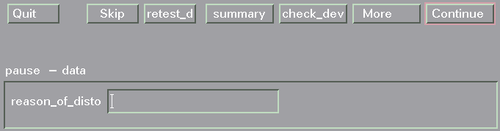

Using the Form Dialog Screen
The figure below shows the initial wafer_auto Form Dialog Screen.

Within the Form Dialog screen, you have the chance to enter some text-why the test was paused, for example-as well as perform certain actions, denoted by the buttons along the top of the screen.
The actions you can perform are:
Quit |
Quits the current lot. |
skip |
Skips the current device. |
retest_dev |
Tests the current device again. |
summary |
Prints a summary of the test of the device in the report window. |
check_dev |
Tests the next device without logging the data. |
more |
Makes another set of buttons available along the top of the screen. |
continue |
Leaves the ON_PAUSE level of the application model and continues with the next device. The ON_PAUSE level will be entered again after the device level is left, as long as the PAUSE flag is set. To un-set the pause flag, click the PAUSE toggle button in the Operation Control screen, so that the button appears unchecked. |